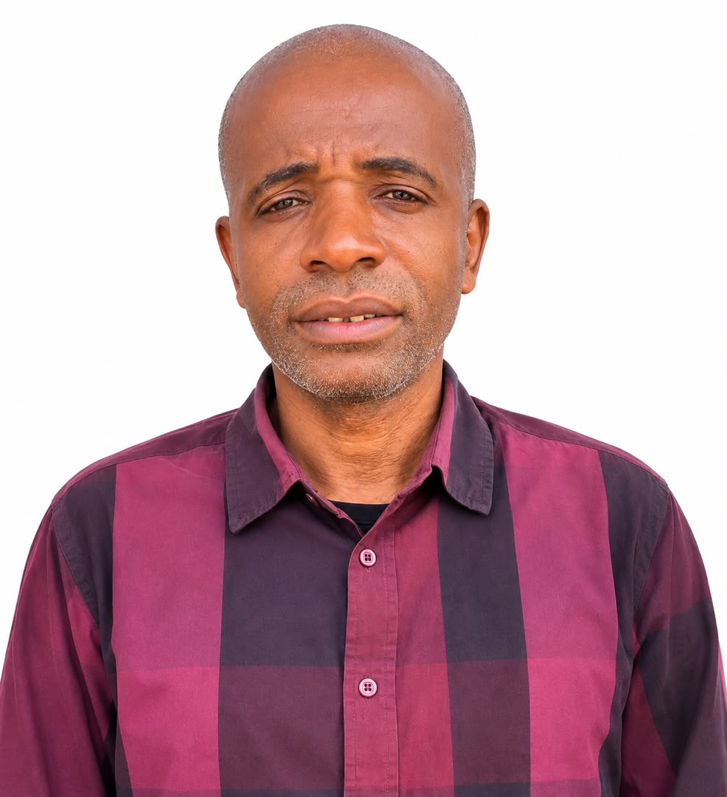

GLOBAL BULK WHITEPAPER
1. INTRODUCTION
Global Bulk est une plateforme innovante d'achat en gros pour les professionnels, entièrement décentralisée et construite sur l'écosystème Pi Network. Née d'une profonde conviction — que la technologie doit servir l'humanité, et non l'inverse — Global Bulk redéfinit les règles du commerce B2B en offrant une alternative moderne, transparente et universellement accessible.
Notre mission est claire : démocratiser l'accès au commerce de gros international en utilisant la cryptomonnaie Pi comme principal moyen de paiement. Là où les plateformes traditionnelles imposent des barrières financières, des commissions excessives et des délais de paiement interminables, Global Bulk propose une solution simple, instantanée et sans intermédiaire.
Global Bulk s'adresse à trois publics complémentaires. Les fournisseurs, en leur permettant de créer, promouvoir et gérer leurs boutiques sans frais cachés. Les acheteurs professionnels, en leur offrant un achat simple, sécurisé et abordable. Les communautés locales et régionales, en leur donnant accès à des produits de qualité auparavant inaccessibles faute de moyens de paiement adaptés.
1.1 L'ÉQUIPE DIRIGEANTE
Djami Yakonga
Fondateur et Directeur du Développement
Un entrepreneur visionnaire passionné par les nouvelles technologies et l'inclusion financière, il est le fondateur et l'initiateur du projet Global Bulk. Il a imaginé cette plateforme pour répondre à un besoin fondamental : faciliter les échanges commerciaux B2B tout en offrant un moyen de paiement accessible à tous, y compris les populations non bancarisées. Fort d'une solide expérience en gestion de projet, finance et développement commercial, il a réuni autour de cette vision ambitieuse une équipe talentueuse et complémentaire.

Freddy Yumba
Directeur et Chef de Projet
Expert en gestion d'entreprise et en stratégie opérationnelle, Freddy Yumba assure la direction et la coordination globale du projet Global Bulk. Il veille à la bonne exécution de la feuille de route, à la structuration de l'équipe et à l'alignement constant entre les objectifs stratégiques et les opérations quotidiennes. Grâce à son expérience dans le pilotage de projets complexes, il garantit que la plateforme reste fidèle à sa promesse d'origine.
2. NOTRE VISION
Nous croyons en un monde où chacun peut organiser ou participer à des échanges commerciaux sans barrières financières, sans commissions excessives et en toute transparence. Global Bulk vise à devenir la référence des plateformes de commerce de gros décentralisées en Afrique et dans le monde, en offrant une expérience utilisateur irréprochable et en autonomisant à la fois les fournisseurs et les acheteurs.
L'analogie du centre commercial : Imaginez un centre commercial ouvert 24 heures sur 24, sans frontières, où chaque boutique est un fabricant ou grossiste international. Global Bulk reprend ces codes : un plan clair par catégories, une signalétique forte et un système d'orientation permanent via la recherche et les filtres.
3. CONCLUSION
Global Bulk transforme le commerce de gros international en un véritable centre commercial numérique : allées claires, boutiques vérifiées, services communs, monnaie unique et règles identiques pour tous. Que vous soyez acheteur à la recherche du meilleur fournisseur ou fabricant souhaitant exposer votre catalogue, vous entrez dans un espace organisé, lisible et professionnel.